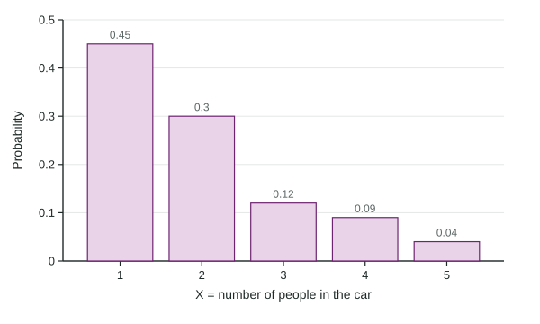

So far, events have been described in words: "the sum is 8", "the student takes art". Often the outcome of a chance process is naturally a number: how many people are in a car, how many goals a team scores, how many of 12 songs are rock songs. A number like that is a random variable, and its probabilities form a distribution, just as data values did in Unit 1.
Random variables
A random variable is a numerical value that depends on the outcome of a chance process. Name it with a capital letter and define it in context, saying what is counted or measured and for which randomly chosen individual:
Let X = the number of people in a randomly chosen car at the toll booth.
The definition has to describe a number. "Let X = the people in the car" or "Let X = rock songs" names things, not a number, and the exam does not give credit for it. Lower-case stands for a particular value: is the probability that the car holds 3 people.
A random variable is discrete if its values are separate, usually counts: people in a car, goals in a game, heads in 3 flips. It is continuous if it can take any value in an interval, like the time to run a mile. This unit treats discrete random variables first; continuous ones come later in the unit, in topic 2.11.
Probability distributions
The probability distribution of a discrete random variable lists every value with its probability.
| 1 | 2 | 3 | 4 | 5 | |
|---|---|---|---|---|---|
| 0.45 | 0.30 | 0.12 | 0.09 | 0.04 |
Two rules make a distribution valid, the same two rules as in topic 2.4: every probability is from 0 to 1, and the probabilities add to exactly 1. The second rule finds a missing value: if the probability for 5 people were blank, it would be

A probability histogram draws the distribution with one bar per value. Describe its shape as you would a histogram of data. The figure is skewed right: most cars carry 1 or 2 people, and a few carry 4 or 5.
Building a distribution
Worked example 1. A fair coin is flipped 3 times. Let H = the number of heads. Give the probability distribution of H.
List the 8 equally likely outcomes: HHH, HHT, HTH, THH, HTT, THT, TTH, TTT.
Count the heads in each: one outcome has 3, three have 2, three have 1, one has 0.
Distribution: , , , . Check: they add to 1.
The values 0, 1, 2, 3 are not equally likely. Values are equally likely only when the underlying outcomes give each one the same number of ways.
Probabilities from a distribution
To find the probability of an event, write it with an inequality, then add the probabilities of the values it includes. The words matter:
| Words | Inequality | For the car data |
|---|---|---|
| at least 3 | ||
| more than 3 | ||
| fewer than 3 | ||
| at most 3 |
"Fewer than 3" read as "3 or fewer" is one of the most common slips on the exam. Fewer than 3 people means 1 or 2.
A cumulative probability adds everything up to a boundary: . Cumulative probabilities also give single values by subtraction:
Worked example 2. Let G = the number of goals a team scores in a randomly chosen game, with probabilities 0.25, 0.35, 0.22, 0.12, 0.06 for 0 to 4 goals. Find and interpret .
Add the values up to the boundary:
Interpretation: in the long run, the team scores 1 goal or fewer in about 60% of its games.
Every answer in this topic should be checkable: probabilities between 0 and 1, the whole distribution adding to 1, and an event's inequality written down before any adding begins.